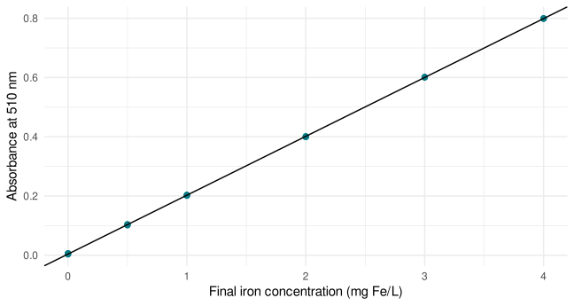
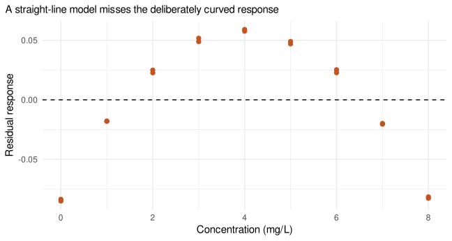
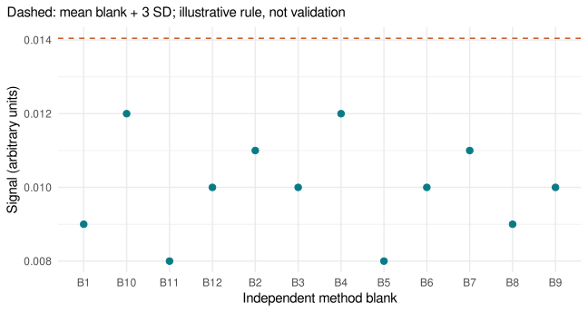

Calibration and quality control
Decide whether a signal can support a concentration
What relation turns signal into concentration?

Eighteen iron standards from zero to four mg/L define an absorbance line with a retained intercept.
Known final concentrations give measured responses.
Fit the measured response direction
Eighteen iron standards from zero to four mg/L define an absorbance line with a retained intercept.
\(A=a+bc+e\).
Retrieve lm
fit <- lm(absorbance ~ standard_mg_l, data = standards)
coef(fit)
Interpret the slope with units
Eighteen iron standards from zero to four mg/L define an absorbance line with a retained intercept.
Slope ≈ 0.198799 L/mg Fe.
Retain the estimated intercept
Eighteen iron standards from zero to four mg/L define an absorbance line with a retained intercept.
Intercept ≈ 0.003874.
Bracket the intended measurement range
Eighteen iron standards from zero to four mg/L define an absorbance line with a retained intercept.
These standards cover 0–4 mg Fe/L final.
Residuals are observations minus fitted responses

Iron calibration residuals scatter around zero without an obvious curved pattern in the selected range.
What pattern would challenge a straight line?
A high R² can hide systematic error

A deliberately curved response leaves systematic patterned residuals after a straight-line fit.
The second dataset is deliberately curved.
Investigate before excluding a standard
A deliberately curved response leaves systematic patterned residuals after a straight-line fit.
A point is not wrong merely because it worsens the fit.
A narrower range needs evidence
A deliberately curved response leaves systematic patterned residuals after a straight-line fit.
Which standards and checks would validate the proposed range?
Changing variance is another model concern

Iron calibration residuals scatter around zero without an obvious curved pattern in the selected range.
Ordinary least squares assumes the specified response-error structure.
Invert only after checking applicability
Eighteen iron standards from zero to four mg/L define an absorbance line with a retained intercept.
\(\hat c=(\bar A-a)/b\).
A concentration estimate is not the original sample result

1.92 × (10/2) × 0.025 = 0.240 mg extracted caffeine; 0.240 / 0.5000 = 0.480 mg/g.
The current unit is mg Fe/L in the final coloured solution.
Three materials ask different QC questions

A blank, independent reference check and a sample spike examine different parts of the measurement.
Which would reveal introduced contamination?
Independence matters for a check standard

A blank, independent reference check and a sample spike examine different parts of the measurement.
The same wrong stock can make standards and checks agree.
Acceptance criteria precede the results
What action follows a failure?
A weak signal can be detectable but poorly quantified

Twelve independent blank responses cluster near 0.010; a dashed line marks mean plus three standard deviations.
Distinguishing a signal from blanks is a different requirement from precise quantification.
Estimate blank variation from independent blanks
Twelve independent blank responses cluster near 0.010; a dashed line marks mean plus three standard deviations.
Mean = 0.0100; SD = 0.001348 signal units.
Keep a heuristic in its proper role
Twelve independent blank responses cluster near 0.010; a dashed line marks mean plus three standard deviations.
\(3s_{blank}/b=0.02023\) mg/L; \(10s_{blank}/b=0.06742\) mg/L.
A signal threshold includes the blank level
Twelve independent blank responses cluster near 0.010; a dashed line marks mean plus three standard deviations.
Threshold here: mean blank plus three SD.
Uncertainty remains after calibration inversion

Averaging repeated readings reduces independent reading noise; it does not remove a common stock or preparation effect.
Reading noise and uncertain slope/intercept both contribute.
Use the supplied helper with its assumptions
source("R/inverse-calibration.R")
inverse_calibration(fit, unknown_absorbance)
Interpret the interval on the correct scale
Final concentration ≈ 2.3981 mg Fe/L; approximate 95% interval 2.3886–2.4077.
Transfer: decide on three failures

A blank, independent reference check and a sample spike examine different parts of the measurement.
Outside range; failed independent check; below quantification requirement.
Take the reasoning into R
Open the student lesson.
Save the calculation and a chemical interpretation in your reproducible report.
Interactive experiment · Predict, change, explain.